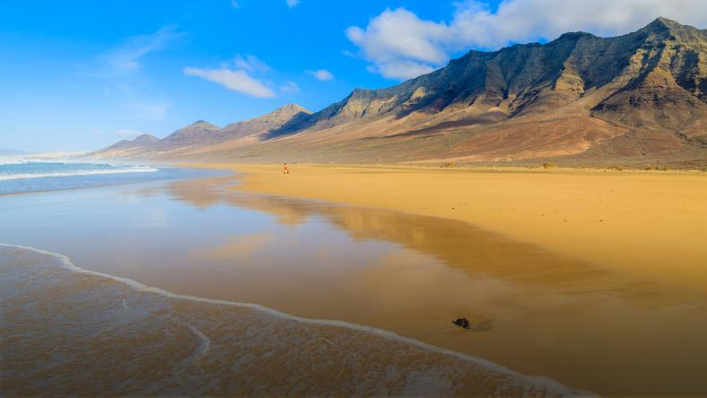
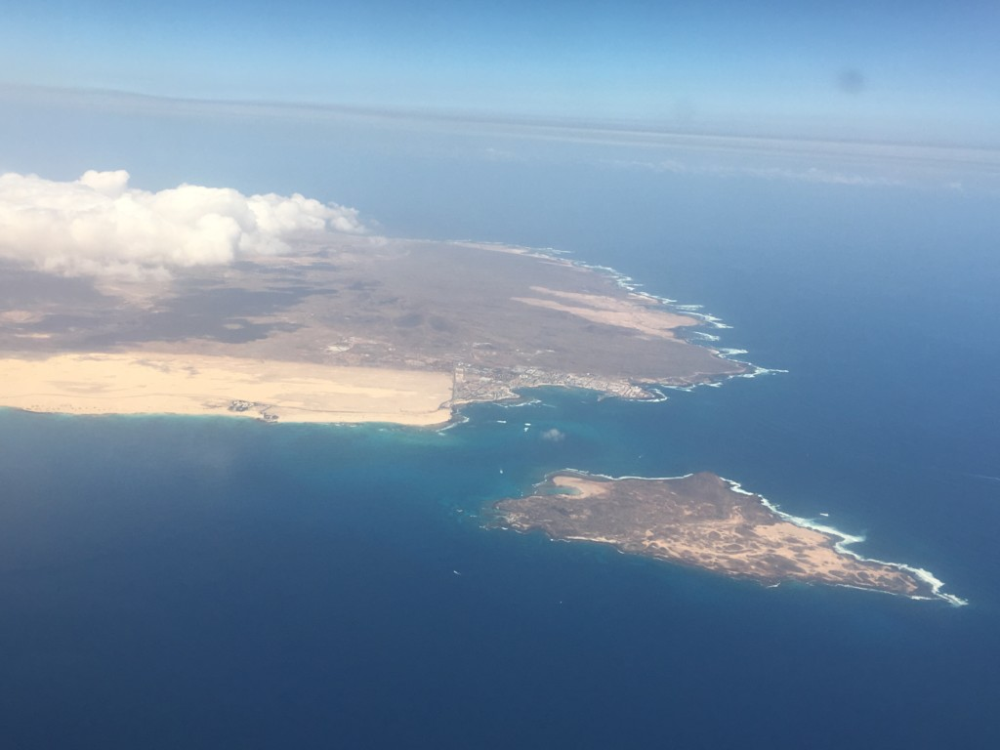

Fuerteventura to druga co do wielkości wyspa archipelagu Wysp Kanaryjskich na Oceanie Atlantyckim,
położona zaledwie 100 km od północno-zachodnich wybrzeży Afryki.
Nazywana jest “plażą Wysp Kanaryjskich”, ponieważ znajduje się tutaj ich ponad 150.
Wiele z nich to nie tylko istny raj dla wielbicieli plażowania oraz słońca, ale także mekka dla żeglarzy i surferów


Temperatura nie spada tutaj nigdy poniżej 20 stopni, a latem przekracza 30 stopni Celsjusza.
Słońce świeci przez 330 dni w roku – latem nawet 12 godzin dziennie.